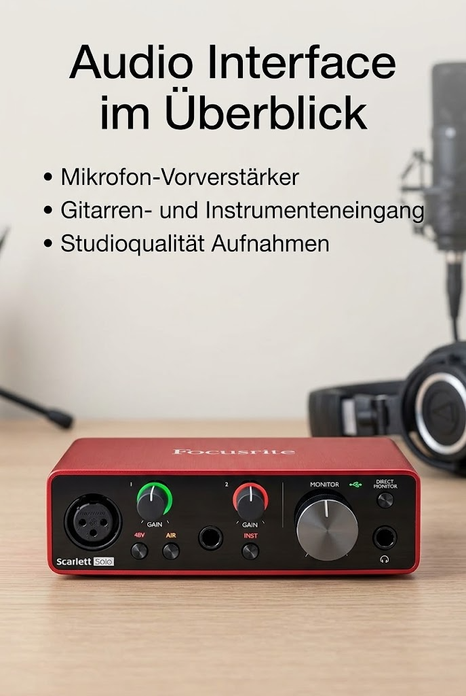

Focusrite Scarlett Solo 3rd Gen USB-C-Audio-Interface

Angaben des Herstellers
Professionelle Leistung mit den besten Vorverstärkern – Erziele mithilfe der leistungsstärksten Mikrofonvorverstärker, die je in der Scarlett-Serie verfügbar waren, transparentere und offener klingende Aufnahmen. Ein schaltbarer Air-Modus verleiht deiner Stimme zusätzliche Klarheit, wenn du mit deinem Scarlett Solo aufnimmst.
Perfekte Gitarrenaufnahmen einfangen – Mit dem übersteuerungsfesten Instrumenteneingang brauchst du bei der Aufnahme von Gitarren und Bässen klanglich keine Abstriche machen. Erfasse deine Instrumente in ihrer ganzen Pracht, ohne unerwünschte Verzerrungen – dank unserer in den Gain-Reglern integrierten Pegelanzeigen.
Aufnahmen in Studioqualität für deine Musik und Podcasts – Mit den erstklassigen Wandlern von Scarlett kannst du professionell klingende Aufnahmen und Mischungen mit bis zu 24 Bit/192 kHz umsetzen. Deine Aufnahmen behalten ihre volle Klangqualität, damit du so wie die Künstler klingen kannst, die du bewunderst.
Geringstes Rauschen für kristallklares Hören – Zwei symmetrische Ausgänge mit niedrigstem Grundrauschen sorgen für eine saubere Klangwiedergabe Höre sämtliche Details und Nuancen deiner eigenen Tracks oder deiner Musik bei Spotify, Apple Music und Amazon Music. Schließe deine Kopfhörer an den leistungsstarken Ausgang an, um Monitoring mit hoher Präzision zu ermöglichen.
Easy Start – Mit unserem Online-Tool Easy Start ist es einfacher denn je, dein Scarlett in Betrieb zu nehmen. Ganz gleich, ob du Audio aufnehmen oder wiedergeben möchtest – wir helfen dir bei deinen ersten Schritten.
Werbung. Diese Seite enthält Partnerlinks: Als Amazon-Partner verdiene ich an qualifizierten Käufen. Für dich ändert sich nichts am Preis. Preise und Verfügbarkeit stehen bei Amazon und ändern sich laufend.